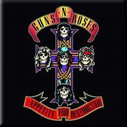
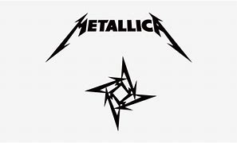
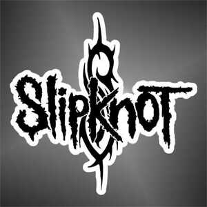

ESTAS SON UNAS DE LAS MEJORES BANDAS DEL ROCK
El rock and roll (también rock 'n' roll o rock & roll), en español rocanrol,
es un género musical de ritmo marcado, derivado de una mezcla de diversos
géneros de música folclórica estadounidense (doo wop, rhythm and blues, hillbilly, blues,
country y western son los más destacados) y popularizado desde los años 1950.